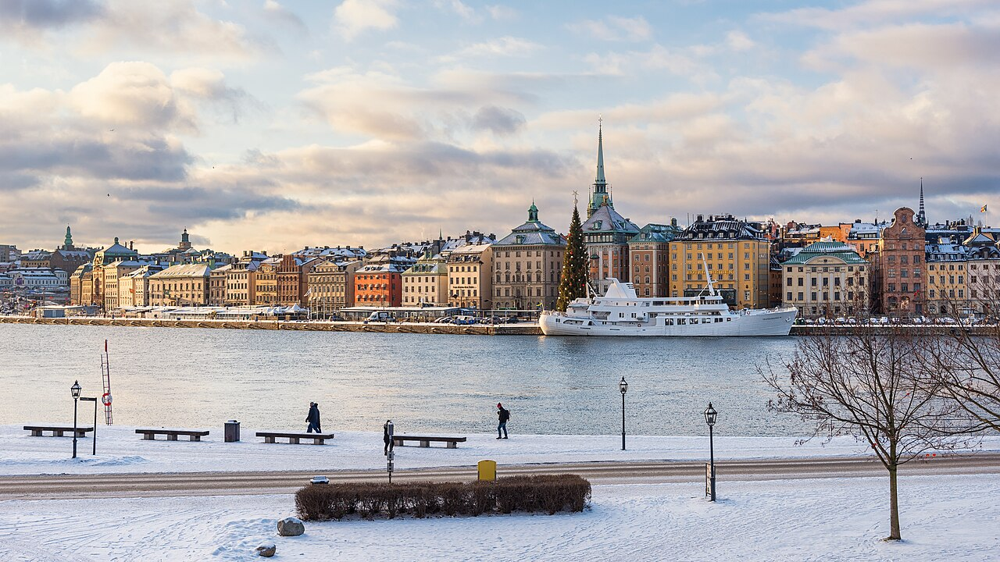

Швеция

Швеция держит баланс: столица на четырнадцати островах, тишина в тридцати тысячах островов дальше и дизайн во всём, включая вывески. Стокгольм начинается с Гамла-стан — старого города с улицами шириной в плечо и черепицей, красной, как шведский дом в детском альбоме. Музей корабля «Васа» — отдельное чудо: в XVII в. корабль утонул через километр после спуска на воду и пролежал три века в холодной воде без жучка — оттого вы видите его целым, с резьбой на каждом бимсе. Дроттнингхольм — «шведский Версаль» за час пути на пароме, который здесь считается общественным транспортом. Архипелаг — второй день: электричка-катер уходит в волны каждые полчаса, и на любом острове вы найдёте красный домик, скалы с соснами и тишину, за которую в других местах платят аренду. Фика — кофейная пауза с булочкой и корицей, здесь не традиция, а трудовое право: присоединяйтесь дважды в день. Зимой — полярное сияние за полярным кругом: поезда ходят, а небо иногда танцует.
Что знать перед поездкой
- Васа» — на открытие, без групп
- На остров архипелага — первой катер-электричкой
- Фика — дважды в день, это закон